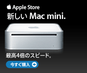

今日
|
RSS
|
RDF
|
Atom
|
その他
詳細な検索
侍ズム
JavaとアーチェリーとGPSと諸々と
タグ
- カテゴリー :
All
|
アーチェリー
|
食べ物
|
ゲーム
|
Java
|
Mac
|
雑多
|
映画
|
写真
|
自宅サーバ
|
旅行・散歩
|
GPS
5月 2006
日
月
火
水
木
金
土
1
2
3
4
5
6
7
8
9
10
11
12
13
14
15
16
17
18
19
20
21
22
23
24
25
26
27
28
29
30
31
4
|
今日
| 6
最近のエントリー
侍 2.1.1 公開
Velocity メモ - #include() と #parse() の違い
侍 2.1 公開
侍 2.0.6 公開
Java SE 6.0 for Mac OSX Developer Preview 1 リリース
侍 2.0.5 公開
Olympus E-330 ファームウェア1.1リリース
デジカメのリモコンになる i アプリ
最近のレスポンス
Re: 侍 2.1 公開
どもです。 じゃんじゃん活用してやってください。
Re: 侍 2.1 公開
すごい！
Re: インターネットサイトを開けません。操作は中断されました
どもですっ！

エントリーはありません。